Capítulo
25/11/2026
2 | Água
© 2017 W. H. Freeman and Company

CAPÍTULO 2
Água
Objetivos de aprendizagem:
- Que tipos de interações ocorrem entre as moléculas
- Por que a água é um bom meio para a vida
- Por que porções apolares se agregam na água
- Como moléculas dissolvidas alteram as propriedades da água
- Como ácidos e bases fracos se comportam na água
- Como os tampões funcionam e por que precisamos deles
- Como a água participa das reações bioquímicas
A Água É o Meio para a Vida
A vida evoluiu na água devido à proteção que ela oferece contra a luz UV.
Os organismos contêm tipicamente 70–90% de água.
As reações químicas ocorrem em meio aquoso.
A água é um determinante crítico da estrutura e função de proteínas, ácidos nucleicos e membranas.
Estrutura da Molécula de Água
- A regra do octeto dita que existem quatro pares de elétrons ao redor de um átomo de oxigênio na água.
- Esses elétrons estão em quatro orbitais sp3.
- Dois desses pares ligam covalentemente dois átomos de hidrogênio a um átomo central de oxigênio.
- Os dois pares restantes permanecem não ligantes (pares isolados).
- A geometria da água é um tetraedro distorcido.
- A eletronegatividade do átomo de oxigênio induz um momento de dipolo resultante.
- Devido ao momento de dipolo, a água pode atuar tanto como doadora quanto como aceptora de ligações de hidrogênio.
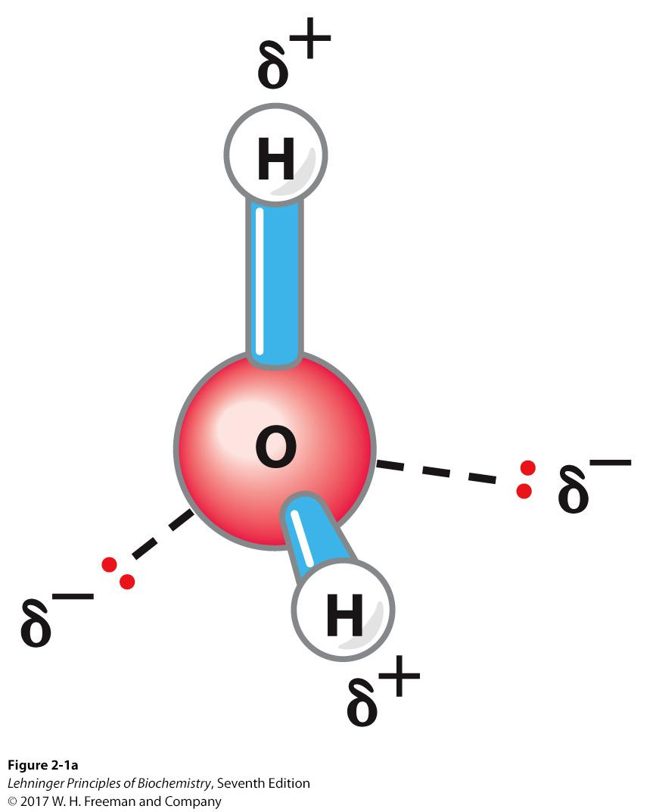
Ligações de Hidrogênio
- Ligações de hidrogênio são fortes interações dipolo-dipolo ou carga-dipolo que surgem entre um hidrogênio ligado covalentemente e um par isolado de elétrons.
- Elas geralmente envolvem dois átomos eletronegativos (frequentemente nitrogênio e oxigênio).
- As ligações de hidrogênio são mais fortes quando as moléculas ligadas permitem padrões de ligação lineares.
- Idealmente, os três átomos envolvidos estão em linha reta.
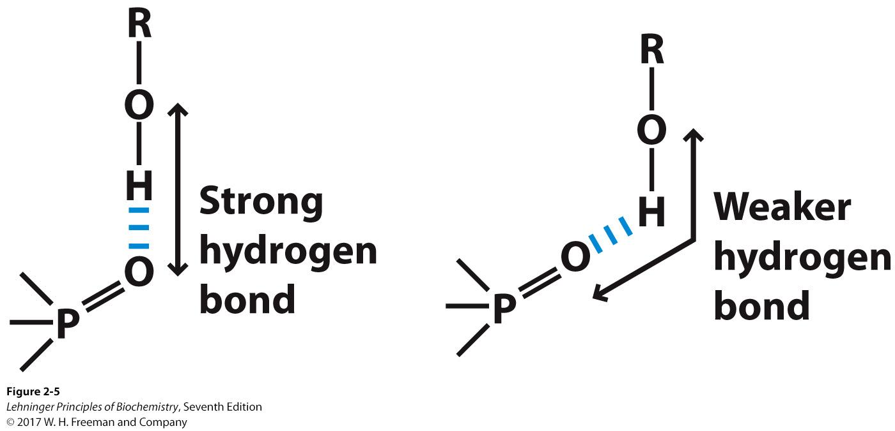
Ligações de Hidrogênio na Água
- A água pode atuar tanto como:
- doadora de H
- aceptora de H
- Até quatro ligações de H por molécula de água conferem à água seu:
- ponto de ebulição anomalamente alto
- ponto de fusão anomalamente alto
- tensão superficial excepcionalmente grande
- A ligação de hidrogênio na água é cooperativa.
- As ligações de hidrogênio entre moléculas vizinhas são fracas (20 kJ/mol) em relação às ligações covalentes H–O (420 kJ/mol).
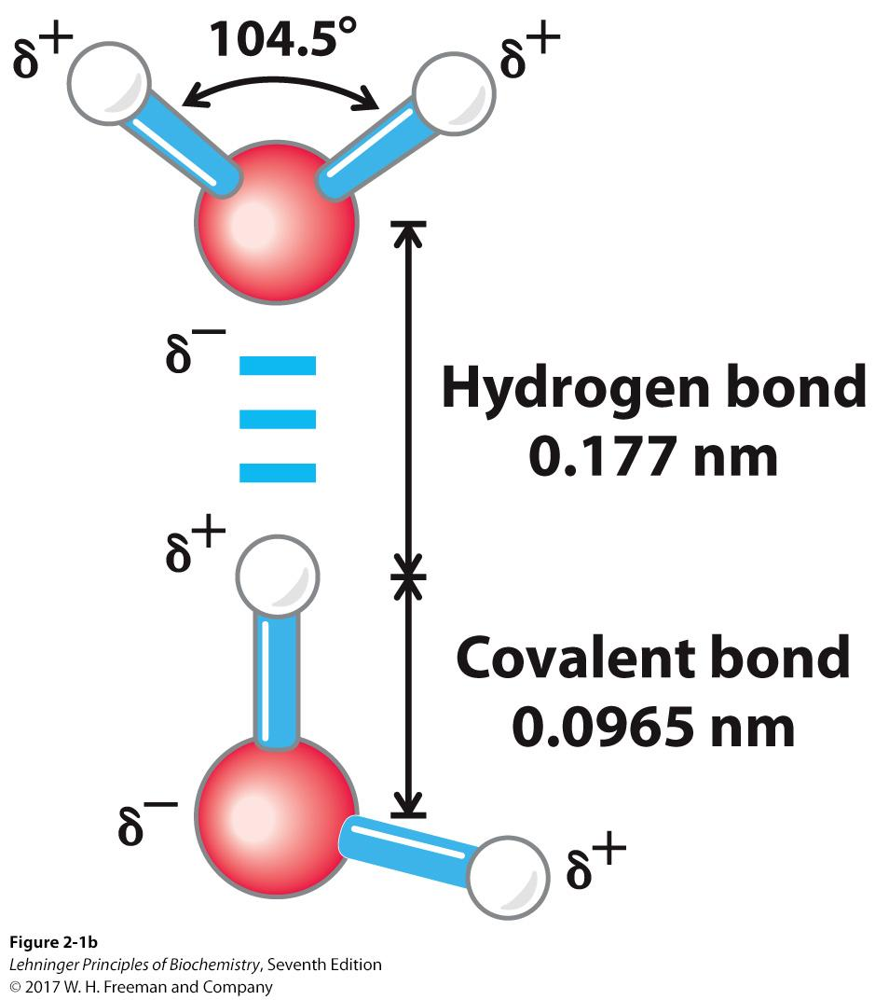
Importância das Ligações de Hidrogênio
- Fonte das propriedades únicas da água
- Estrutura e função das proteínas
- Estrutura e função do DNA
- Estrutura e função dos polissacarídeos
- Ligação de substratos às enzimas
- Ligação de hormônios aos receptores
- Pareamento de mRNA e tRNA
“Acredito que, à medida que os métodos da química estrutural forem aplicados a problemas fisiológicos, descobrir-se-á que a importância da ligação de hidrogênio para a fisiologia é maior do que a de qualquer outra característica estrutural isolada.”
–Linus Pauling, A Natureza da Ligação Química, 1939
Relevância Biológica das Ligações de Hidrogênio
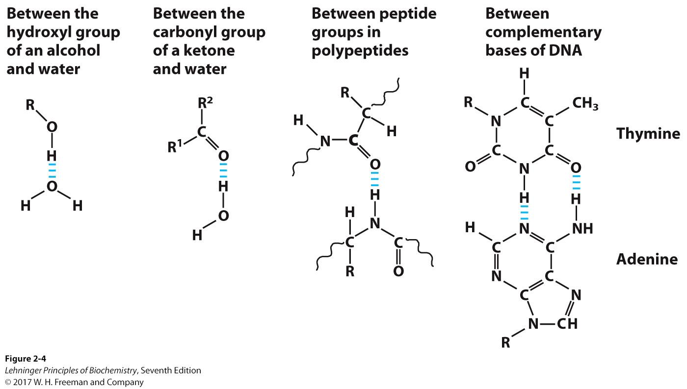
Gelo: Água no Estado Sólido
- A água possui muitas formas cristalinas diferentes; o gelo hexagonal é o mais comum.
- O gelo hexagonal forma uma rede organizada e, portanto, tem baixa entropia.
- O gelo hexagonal contém o máximo de ligações de hidrogênio por molécula de água, forçando as moléculas de água a um arranjo equidistante. Assim:
- o gelo tem densidade menor que a água líquida
- o gelo flutua
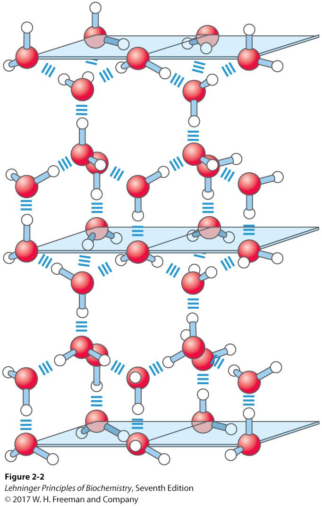
Água como Solvente
- A água é um bom solvente para substâncias carregadas e polares:
- aminoácidos e peptídeos
- pequenos álcoois
- carboidratos
- A água é um mau solvente para substâncias apolares:
- gases apolares
- porções aromáticas
- cadeias alifáticas
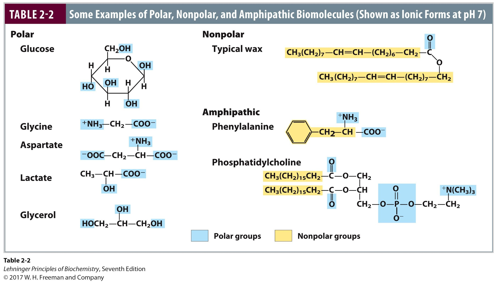
Física das Interações Não Covalentes
Interações não covalentes não envolvem o compartilhamento de um par de elétrons. Com base em sua origem física, pode-se distinguir entre:
- Interações iônicas (Coulômbicas)
- interações eletrostáticas entre espécies permanentemente carregadas, ou entre o íon e um dipolo permanente
- Interações dipolo
- interações eletrostáticas entre moléculas não carregadas, mas polares
- Interações de van der Waals
- interações fracas entre todos os átomos, independentemente da polaridade
- componente atrativo (dispersão) e repulsivo (estérico)
- Efeito Hidrofóbico
- fenômeno complexo associado à ordenação de moléculas de água ao redor de substâncias apolares
Exemplos de Interações Não Covalentes
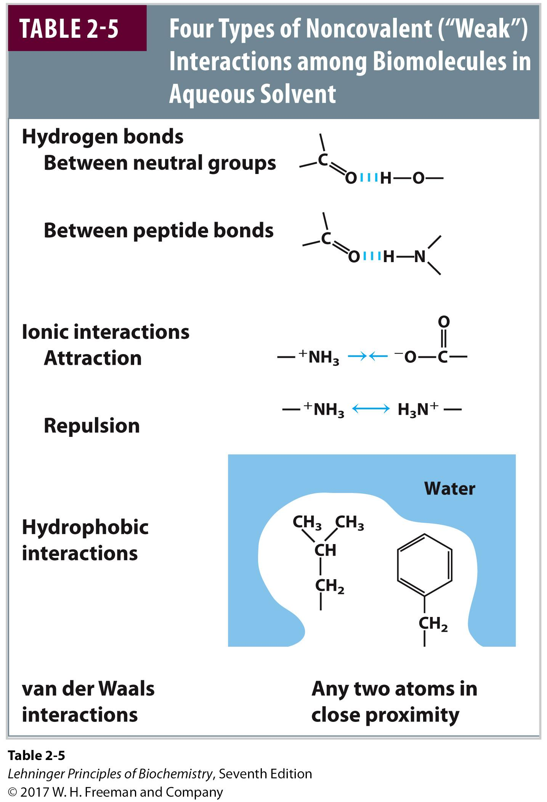
Dissolver Sais Envolve Quebrar Interações Iônicas
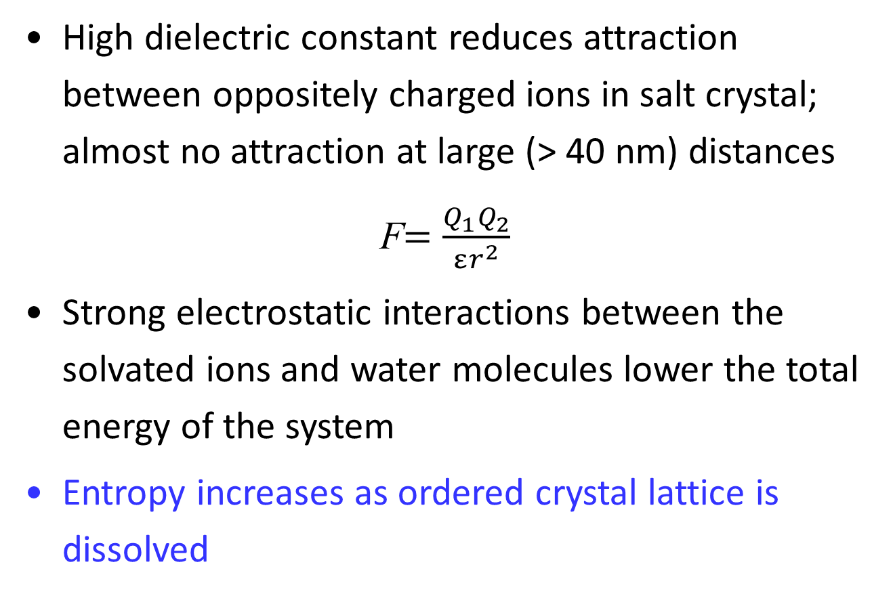
Dissolver Sais Envolve Quebrar Interações Iônicas
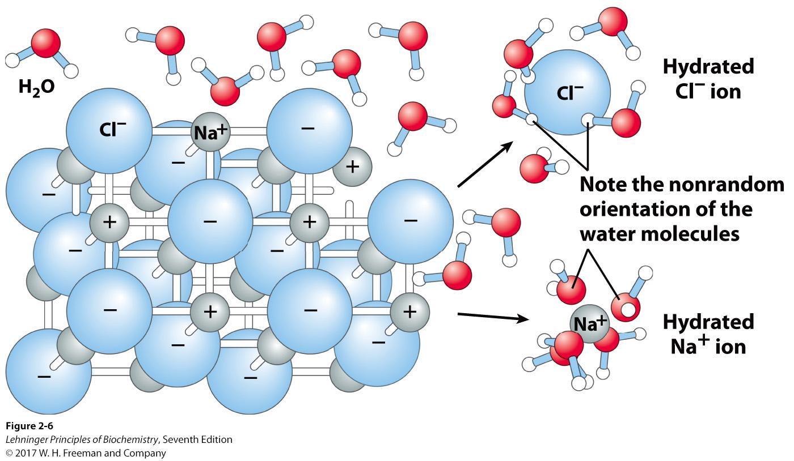
Interações de van der Waals
- As interações de van der Waals têm dois componentes:
- força atrativa (dispersão de London), que depende da polarizabilidade
- força repulsiva (repulsão estérica), que depende do tamanho dos átomos
- A atração domina em distâncias maiores (tipicamente 0,4–0,7 nm).
- A repulsão domina em distâncias muito curtas.
- Existe uma distância de energia mínima (distância de contato de van der Waals).
Significado Bioquímico das
Interações de van der Waals
- Fracas individualmente
- facilmente quebradas, reversíveis
- Universais
- ocorrem entre quaisquer dois átomos que estejam próximos um do outro
- Importância
- determinam a complementaridade estérica
- estabilizam macromoléculas biológicas (empilhamento no DNA)
- facilitam a ligação de ligantes polarizáveis
O Efeito Hidrofóbico
- Refere-se à associação ou interação de moléculas apolares ou componentes de moléculas em solução aquosa
- É um dos principais fatores por trás de:
- enovelamento proteico
- associação proteína-proteína
- formação de micelas lipídicas
- ligação de hormônios esteroides aos seus receptores
- Não surge devido a alguma força atrativa direta entre duas moléculas apolares
Solubilidade de Solutos Polares e Apolares
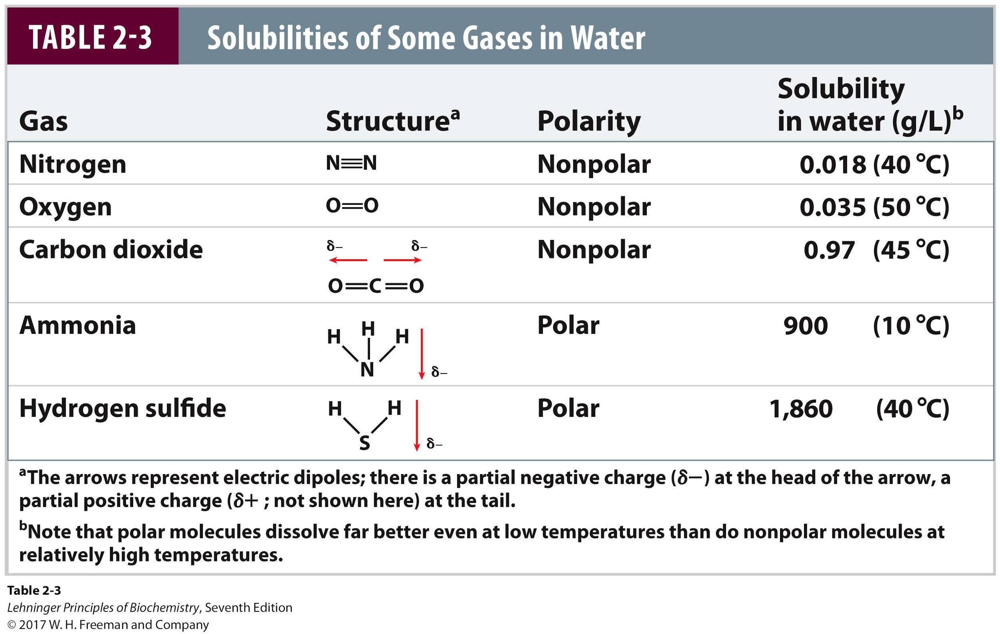
Por que moléculas apolares são pouco solúveis em água?
A Água ao Redor de Solutos Apolares Tem Menor Entropia

Alta entropia
Baixa
Entropia
Baixa entropia é termodinamicamente desfavorável, portanto solutos hidrofóbicos têm baixa solubilidade.
Origem do Efeito Hidrofóbico
- Considere lipídios anfipáticos na água.
- Moléculas lipídicas dispersam-se na solução; as caudas apolares das moléculas lipídicas são cercadas por moléculas de água ordenadas.
- A entropia do sistema diminui.
- O sistema está agora em um estado desfavorável.
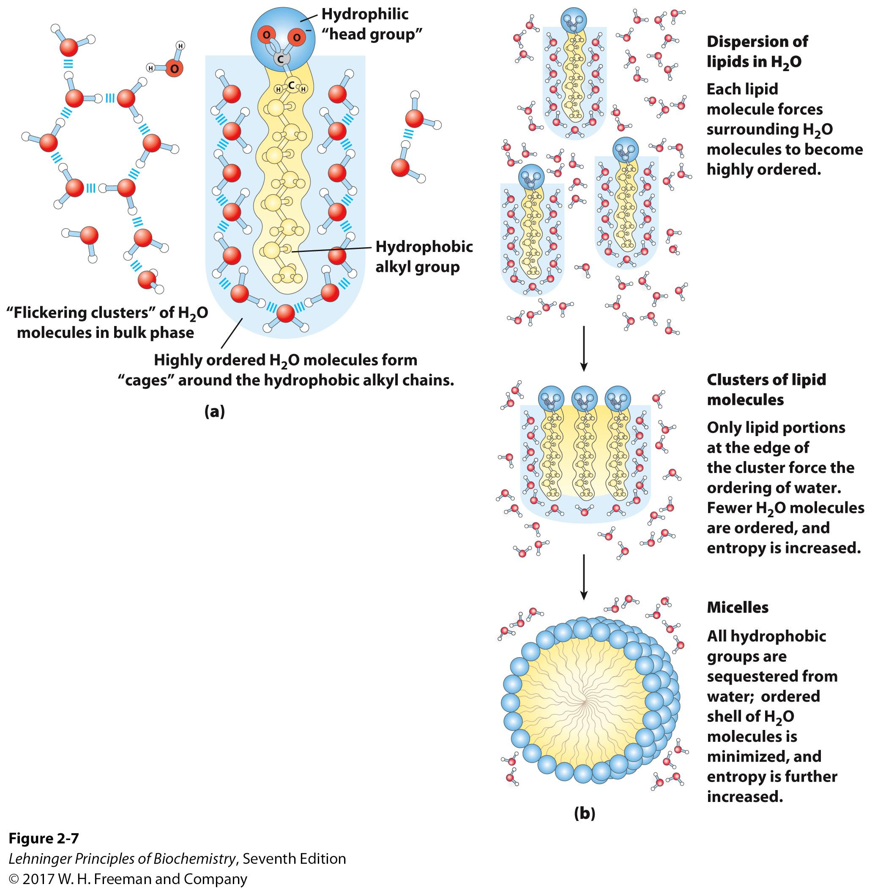
Origem do Efeito Hidrofóbico
- Porções apolares da molécula anfipática agregam-se para que menos moléculas de água fiquem ordenadas e a entropia aumente.
- Todos os grupos apolares são sequestrados da água, e as moléculas de água liberadas aumentam ainda mais a entropia.
- Apenas os “grupos cabeça” polares ficam expostos.
Origem do Efeito Hidrofóbico
- Com concentração suficientemente alta de moléculas anfipáticas, é possível a agregação completa em micelas.
O Efeito Hidrofóbico Favorece a Ligação de Ligantes
Sítios de ligação em enzimas e receptores são frequentemente hidrofóbicos.
Tais sítios podem ligar substratos e ligantes hidrofóbicos, como hormônios esteroides, que deslocam a água e aumentam a entropia do sistema.
Muitos fármacos são projetados para tirar proveito do efeito hidrofóbico.
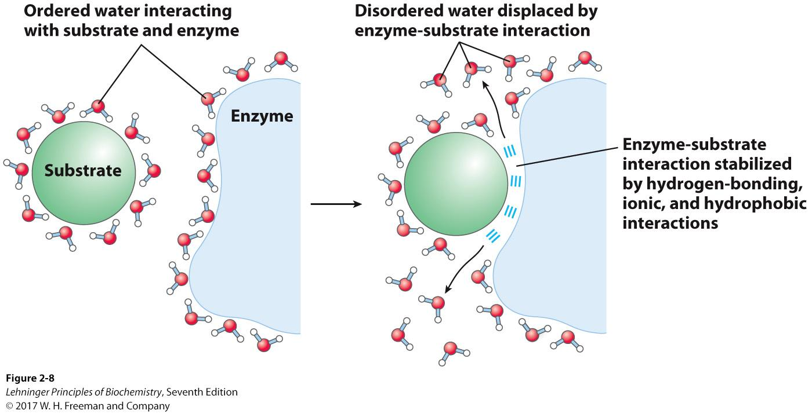
Solutos Podem Alterar as Propriedades da Água
- Propriedades coligativas:
- ponto de ebulição, ponto de fusão e osmolaridade
- não dependem da natureza do soluto, apenas da concentração
- Propriedades não coligativas:
- viscosidade, tensão superficial, sabor e cor
- dependem da natureza química do soluto
- O citoplasma das células são soluções altamente concentradas e têm alta pressão osmótica devido aos solutos dissolvidos.
Pressão Osmótica
- A água move-se de áreas de alta concentração de água (baixa concentração de soluto) para áreas de baixa concentração de água (alta concentração de soluto).
- Pressão osmótica (π) é a força necessária para resistir a esse movimento.
- A pressão osmótica é influenciada pela concentração de cada soluto em solução.
- Componentes dissociados de um soluto influenciam individualmente a pressão osmótica.
Pressão Osmótica
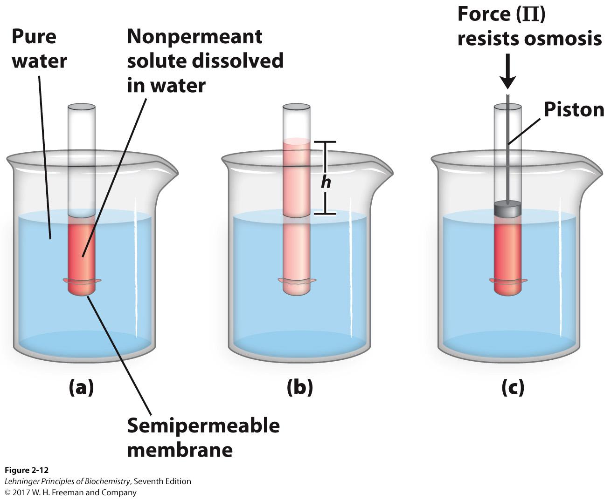
Efeito da Pressão Osmótica nas Células
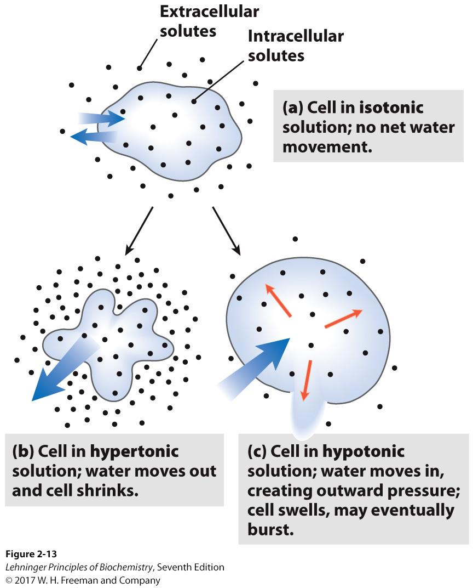
Ionização da Água
\[\mathrm{H_2O} \rightleftharpoons \mathrm{H^+} + \mathrm{OH^-}\]
- Ligações O-H são polares e podem dissociar-se heteroliticamente.
- Os produtos são um próton (H+) e um íon hidróxido (OH–).
- A dissociação da água é um processo reversível rápido.
- A maioria das moléculas de água permanece não ionizada; assim, a água pura tem condutividade elétrica muito baixa (resistência: 18 MΩ•cm).
- O equilíbrio está fortemente deslocado para a esquerda (baixo Keq).
- A extensão da dissociação depende da temperatura.
Hidratação de Prótons
- Prótons não existem livres em solução.
- Eles são imediatamente hidratados para formar íons hidrônio (H3O+).

- Um íon hidrônio é uma molécula de água com um próton associado a um dos pares de elétrons não ligantes.
- Íons hidrônio são solvatados por moléculas de água próximas.
- As ligações covalentes e de hidrogênio são intercambiáveis. Isso permite uma mobilidade extremamente rápida de prótons na água via “salto de prótons” (proton hopping).
Salto de Prótons (Proton Hopping)
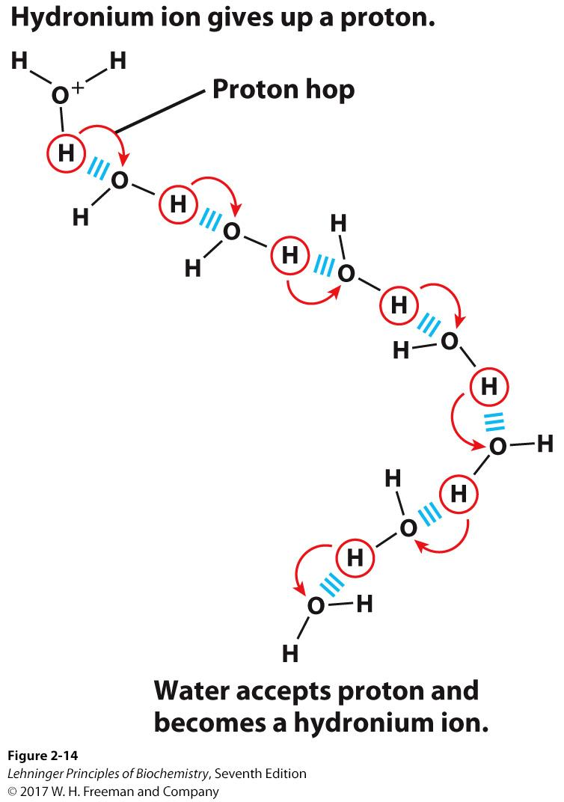
Ionização da Água:
Tratamento Quantitativo
As concentrações das espécies participantes em um processo de equilíbrio não são independentes, mas estão relacionadas pela constante de equilíbrio:
\[\mathrm{H_2O} \rightleftharpoons \mathrm{H^+} + \mathrm{OH^-} \qquad\qquad K_{eq} = \frac{[\mathrm{H^+}] \cdot [\mathrm{OH^-}]}{[\mathrm{H_2O}]}\]
Keq pode ser determinado experimentalmente, sendo 1,8 • 10–16 M a 25°C.
[H2O] pode ser determinado a partir da densidade da água, sendo 55,5 M.
- Produto iônico da água:
\[K_w = K_{eq} \cdot [\mathrm{H_2O}] = [\mathrm{H^+}][\mathrm{OH^-}] = 1 \cdot 10^{-14}\,\mathrm{M^2}\]
- Na água pura, [H+] = [OH–] = 10–7 M.
O Que É pH?
\(\mathbf{pH = -\log[H^+]}\)
\[K_w = [\mathrm{H^+}][\mathrm{OH^-}] = 1 \cdot 10^{-14}\,\mathrm{M^2}\]
\[-\log[\mathrm{H^+}] - \log[\mathrm{OH^-}] = +14\]
\[\mathrm{pH} + \mathrm{pOH} = 14\]
- O pH é definido como o logaritmo negativo da concentração de íons hidrogênio.
- Simplifica equações
- O pH e o pOH devem sempre somar 14.
- Em solução neutra, [H+] = [OH–] e o pH é 7.
- O pH pode ser negativo ([H+] = 6 M).
A Escala de pH É Logarítmica:
1 unidade = 10 vezes
| [H+] (M) | pH | [OH–] (M) | pOHa |
|---|---|---|---|
| 100 (1) | 0 | 10–14 | 14 |
| 10–1 | 1 | 10–13 | 13 |
| 10–2 | 2 | 10–12 | 12 |
| 10–3 | 3 | 10–11 | 11 |
| 10–4 | 4 | 10–10 | 10 |
| 10–5 | 5 | 10–9 | 9 |
| 10–6 | 6 | 10–8 | 8 |
| 10–7 | 7 | 10–7 | 7 |
| 10–8 | 8 | 10–6 | 6 |
| 10–9 | 9 | 10–5 | 5 |
| 10–10 | 10 | 10–4 | 4 |
| 10–11 | 11 | 10–3 | 3 |
| 10–12 | 12 | 10–2 | 2 |
| 10–13 | 13 | 10–1 | 1 |
| 10–14 | 14 | 100 (1) | 0 |
aA expressão pOH é às vezes usada para descrever a basicidade, ou concentração de OH–, de uma solução; pOH é definido pela expressão pOH = −log [OH–], que é análoga à expressão para pH. Observe que em todos os casos, pH + pOH = 14.
pH de Alguns Líquidos Comuns
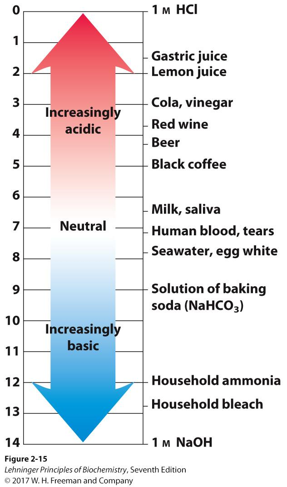
Dissociação de Eletrólitos Fracos:
Princípio

\[K_a = \frac{[\mathrm{H^+}][\mathrm{CH_3COO^-}]}{[\mathrm{CH_3COOH}]} = 1{,}74 \cdot 10^{-5}\,\mathrm{M}\]
Eletrólitos fracos dissociam-se apenas parcialmente na água.
A extensão da dissociação é determinada pela constante de dissociação ácida Ka.
Podemos calcular o pH se o Ka for conhecido. Mas é necessária alguma álgebra!
Dissociação de Eletrólitos Fracos: Exemplo
Qual é o pH final de uma solução quando 0,1 mol de ácido acético é adicionado à água para um volume final de 1 L?

0,1 – x
x
x
\(\displaystyle K_a = \frac{[x][x]}{[0{,}1 - x]} = 1{,}74 \cdot 10^{-5}\,\mathrm{M}\)
\(x^2 = 1{,}74 \cdot 10^{-6} - 1{,}74 \cdot 10^{-5}\,x\)
\(x^2 + 1{,}74 \cdot 10^{-5}\,x - 1{,}74 \cdot 10^{-6} = 0\)
x = 0,001310, pH = 2,883
Assumimos que a única fonte de H+ é o ácido fraco.
Para encontrar [H+], uma equação quadrática deve ser resolvida.
Dissociação de Eletrólitos Fracos: Simplificação
0,1 – x
x
x
0,1
x
x
\(\displaystyle K_a = \frac{[x][x]}{[0{,}1]} = 1{,}74 \cdot 10^{-5}\,\mathrm{M}\)
\(x^2 = 1{,}74 \cdot 10^{-6}\)
x = 0,00132, pH = 2,880
- A equação pode ser simplificada se a quantidade de espécies dissociadas for muito menor do que a quantidade de ácido não dissociado.
- A aproximação funciona para ácidos e bases suficientemente fracos.
- Verifique se x < [ácido total].
pKa Mede a Acidez
pKa = –log Ka
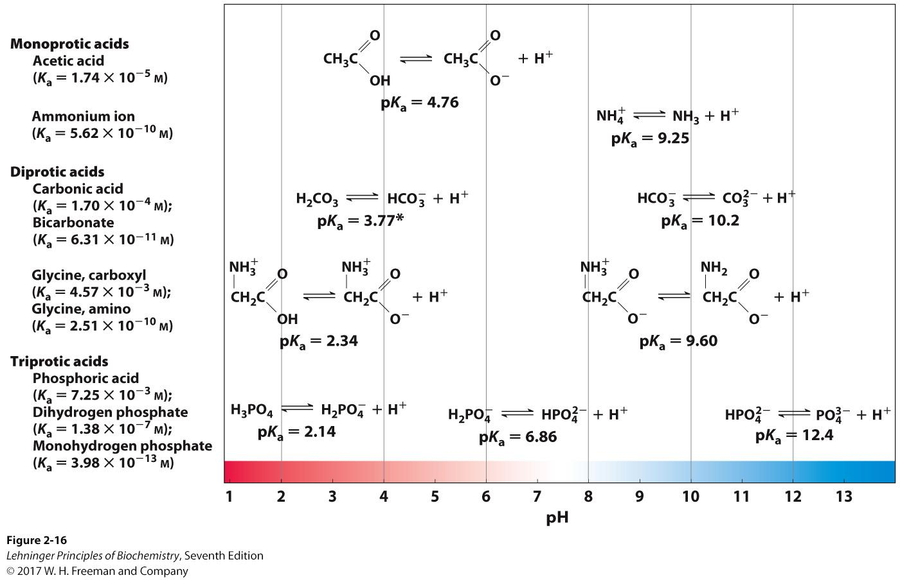
Tampões São Misturas de Ácidos Fracos e Seus Ânions (Base Conjugada)
- Tampões resistem a mudanças no pH.
- Em pH = pKa, há uma mistura 50:50 das formas ácida e aniônica do composto.
- A capacidade tamponante do sistema ácido/ânion é máxima em pH = pKa.
- A capacidade tamponante é perdida quando o pH difere do pKa em mais de 1 unidade de pH.
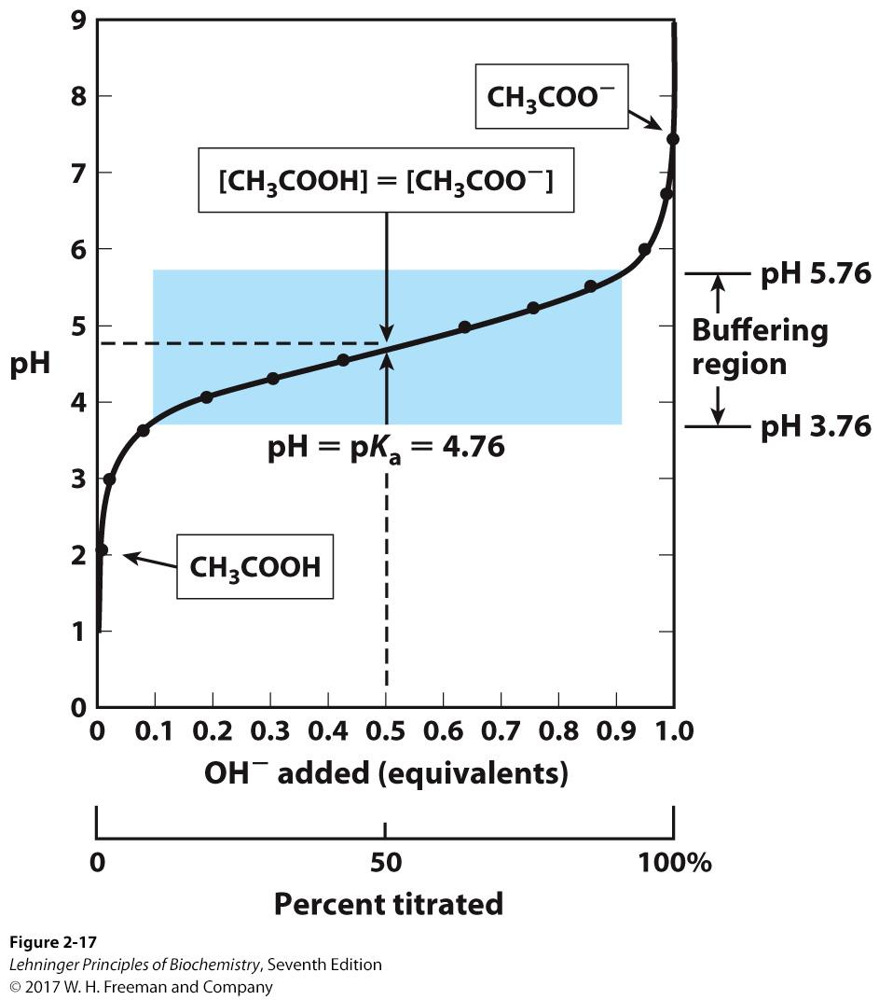
Ácidos Fracos Têm Diferentes pKas
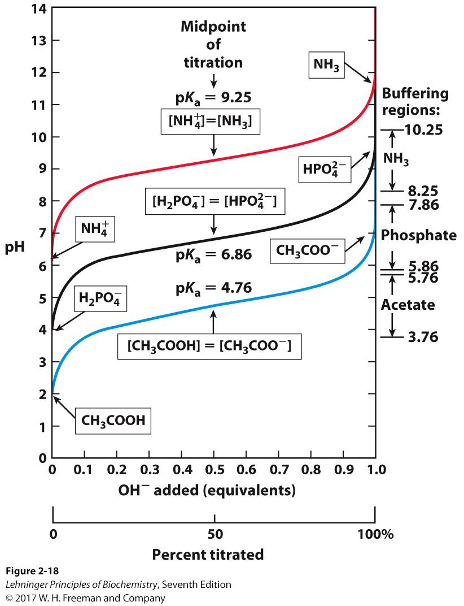
Equação de Henderson–Hasselbalch: Derivação
\(\mathrm{HA} \rightleftharpoons \mathrm{H^+} + \mathrm{A^-}\)
\(\displaystyle K_a = \frac{[\mathrm{H^+}][\mathrm{A^-}]}{[\mathrm{HA}]}\)
\(\displaystyle [\mathrm{H^+}] = K_a \frac{[\mathrm{HA}]}{[\mathrm{A^-}]}\)
\(\displaystyle -\log[\mathrm{H^+}] = -\log K_a - \log\frac{[\mathrm{HA}]}{[\mathrm{A^-}]}\)
\(\displaystyle \mathrm{pH} = \mathrm{p}K_a + \log\frac{[\mathrm{A^-}]}{[\mathrm{HA}]}\)
Equação de Henderson–Hasselbalch: Exemplo
Um tampão é composto por 0,1 M de ácido acético (CH3COOH, pKa = 4,76) e 0,05 M de acetato de sódio (CH3COONa). Qual é o pH final do tampão?
\[\mathrm{pH} = 4{,}76 + \log \frac{[0{,}05]}{[0{,}1]}\]
pH final do tampão = 4,45
Sistemas Tampão Biológicos
- A manutenção do pH intracelular é vital para todas as células.
- Reações catalisadas por enzimas têm pH ótimo.
- A solubilidade de moléculas polares depende de doadores e aceptores de ligações de H.
- O equilíbrio entre o gás CO2 e o HCO3– dissolvido depende do pH.
- Sistemas tampão in vivo são baseados principalmente em:
- fosfato, concentração na faixa milimolar
- bicarbonato, importante para o plasma sanguíneo
- histidina, tampão eficiente em pH neutro
- Sistemas tampão in vitro são frequentemente baseados em ácidos sulfônicos de aminas cíclicas.
- HEPES
- PIPES
- CHES

A Água Ligada a Proteínas É
Essencial para Sua Função
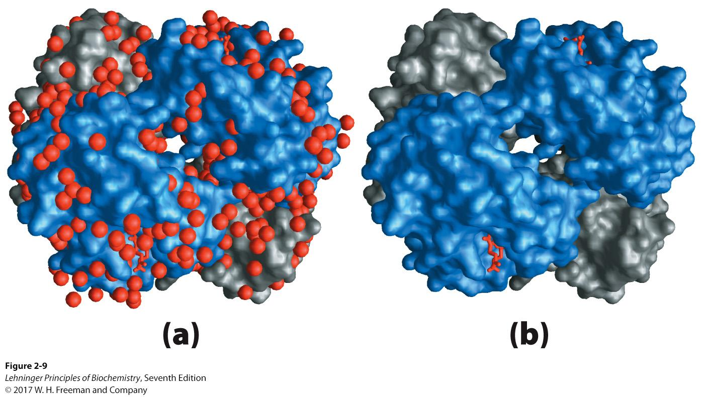
A Água Ligada a Proteínas É
Essencial para Sua Função
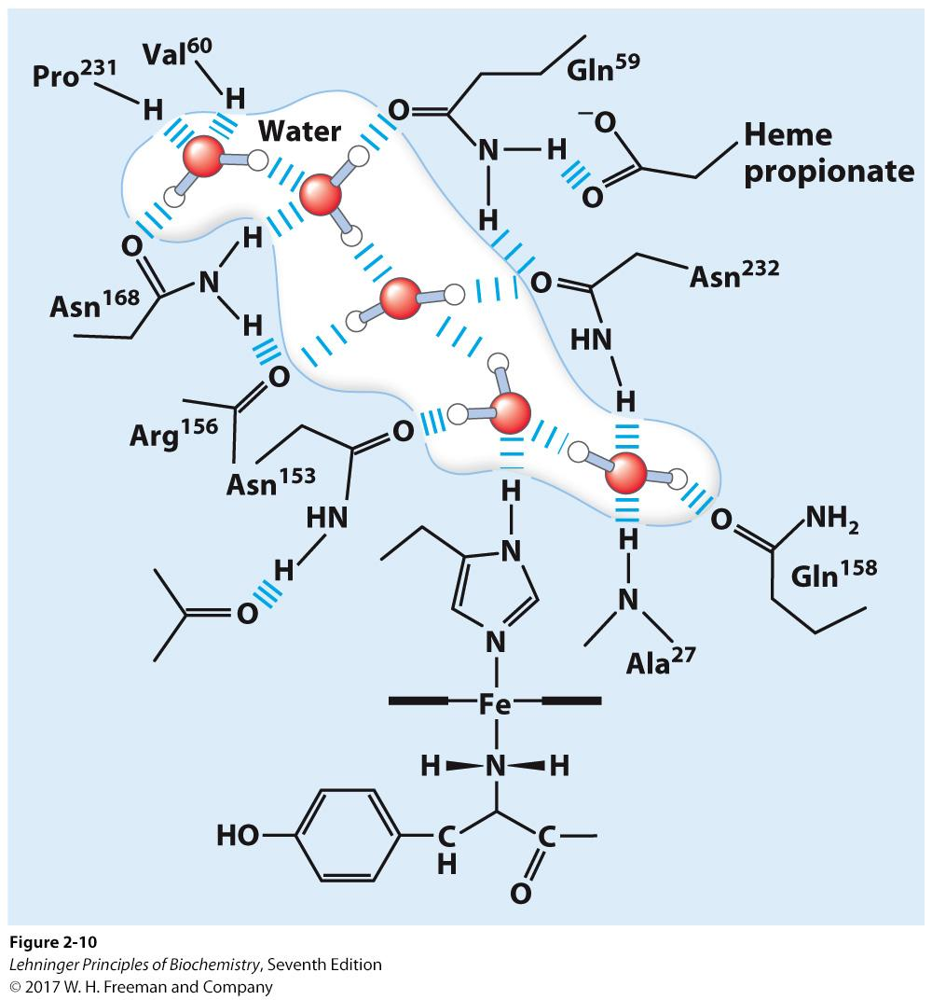
A Água Ligada a Proteínas É
Essencial para Sua Função
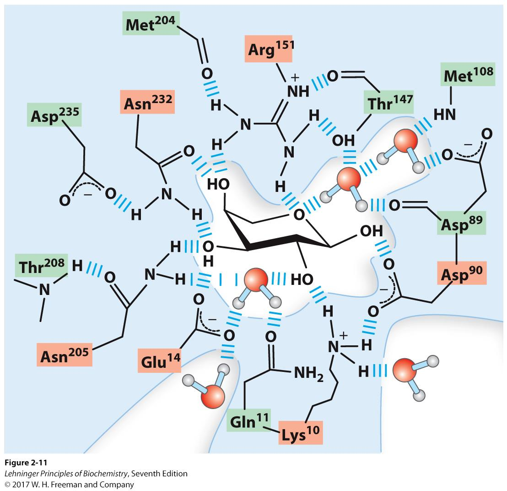
Capítulo 2: Resumo
Neste capítulo, aprendemos sobre a:
- natureza das forças intermoleculares
- propriedades e estrutura da água líquida
- comportamento de ácidos e bases fracos na água
- maneira como a água pode participar de reações bioquímicas